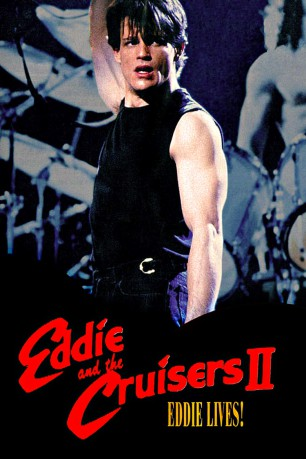

#11371 Eddie lebt
Alternativ: Eddie and the Cruisers II: Eddie Lives! (Englischer Titel)
 
 IMDB-Wertung: 6.2 / 10
IMDB-Wertung: 6.2 / 10  Metascore: 0
Metascore: 0 
Rockstar Eddie Wilson (Michael Paré) ist angeblich 1964 bei einem Autounfall gestorben. In Wirklichkeit kam sein Saxophonist ums Leben und Eddie zog sich in die kanadische Provinz zurück. Nun kehrt der Totgeglaubte unter dem Namen Joe West nach New York zurück. Dort will er eine neue Band auf die Beine stellen.
Jahr: 1989
Dauer: 99 Minuten
FSK: 6
Land: Kanada Studio: UFA VideoTonspuren: DD2.0 - ,
Untertitel:
Auflösung: 1080p (1920x1080) Größe: 6717 MB
Genre: Drama, Musik, Liebe
Regisseur: Jean-Claude Lord
Drehbuch: P.F. Kluge, Charles Zev Cohen, Rick Doehring
Soundtrack: Leon Aronson, Marty Simon
Darsteller:
 Michael Paré als Eddie Wilson / Joe West
Michael Paré als Eddie Wilson / Joe West- Marina Orsini als Diane Armani
- Bernie Coulson als Rick Diesel
- Matthew Laurance als Sal Amato
 Anthony Sherwood als Hilton Overstreet
Anthony Sherwood als Hilton Overstreet- Kate Lynch als
- Harvey Atkin als
 Vlasta Vrana als
Vlasta Vrana als  Larry King als
Larry King als - Bo Diddley als
- James Rae als
- Bruno Verdoni als
 Richard Jutras als
Richard Jutras als - Marc Denis als
- Marcel Jeannin als
- Michael Fennell als
- Michael Rhoades als Dave Pagent
- Mark Holmes als
- David Matheson als Stewart Fairbanks
- Paul Markle als
- Martha Quinn als
- Merrill Shindler als
- Sunny Joe White als
- Michael 'Tunes' Antunes als
- Ulla Moreland als
- Phil Mattera als
- Kim Lombard als
- Michael McGill als
- Mark Trafford als
- Dorian Joe Clark als
- Ari Vernon als
- Al Ward als
- Ben Scotti Jr. als
- Anthony Scotti als
- Lois Dellar als
- Trevor Brown als
- Jesse Nanch als
- Leslie Alston als
- Alma Faye Brooks als
- Ranee Lee als
- Thomas McClellan als
- Alan Perry als
- Orville Thompson als
- Warren 'Slim' Williams als
- Mark Brennan als
- Nathalie Bousquet als
- Kali Corovesis als
- Isabelle Delage als
- France Dionne als
- Suzie Dionne als
Datei: X:\2-Dilogie(A-F)\Eddie and the Cruisers\Eddie lebt (1989, FSK6, 1920x1080).mkv seit 24.06.2019
Festplatte: HD Collection-2(A-Z)-3(A-M)
 Alle Filme aus Gruppe '2-Dilogie(A-F)\Eddie and the Cruisers'
Alle Filme aus Gruppe '2-Dilogie(A-F)\Eddie and the Cruisers'